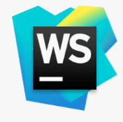
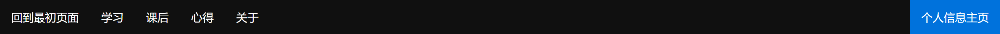

我的第一年大学
网站风格以简洁、大方为主，设置了短小精悍的特效，都是我课后学习，熟练掌握的。对于高级特效，我并未系统性学习，所以整个网站并未使用JavaScript进行开发 。
网站设计理念：华丽的特效千篇一律，有趣的内容万里挑一。本站开发过程中一直秉持着内容>特效的设计理念。期末作业网站使用的特效可能会有相同的，但是内容绝对是每个人在过去一年中的所见所得，就像软件是硬件的灵魂，内容也就是网页的灵魂，绝非是特效。
该站的源代码全部都由本人手写，主要是对开发过程中的频繁修改进行了考量，我认为手写代码出现问题可以迅速找出问题，针对性修改，增、删、改、查都由自己掌控，更加灵活。
Webstorm 2022.1-教育许可证、画图3D
Webstorm 2022.1负责网页源代码编写以及上传至FTP服务器，画图3D负责进行图片素材的处理
90%以上是自我的感悟，10%一下来自知乎、澎湃新闻、微博，使用后均已注明出处。文字大小与行间距经过仔细考量而设定，减少大家的视觉疲劳。大部分文本都是我在过去一年的心得体会，也算是我的一个倾诉的空间吧。其中也有很多关于学习上、生活上的经验，供大家参考，看完全站内容是很不容易的，谢谢大家的支持！也希望本网站能对大家有所帮助！有问题也可以联系我哈。
图片都是我精挑细选的，背景图与设计理念相同，简洁大方不失优雅；头像等其他素材来源于网络。关于透明图片，使用了画图3D（系统自带）进行了加工，使用透明图可以让图片融入环境，不会造成较大的视觉差异，有浑然一体的美感。
来自于GitHub上的项目，该项目收集并整理了网站常用的emoji，项目连接：🔗emoji-list
 主要是导航栏的使用，主要的页面均提供下一页的跳转按钮，内部跳转设有跳回按钮；文本框背景设置为透明，在用户的指针移动到文本框时，背景颜色透明度消失，方便用户阅读
CSS中DIV的flex布局，来源于课后学习，本站多处使用但未完全发挥flex布局的优越性；伪类hover的简单运用，实现指针悬停元素的属性发生改变，类似于JavaScript中的”鼠标经过图像“；border修饰元素边框；@keyframes配合animation，CSS中控制元素属性过渡时需要使用，可以实现类似于ppt的效果，短小精悍不花哨。主干部分其实都是基础知识综合运用而来的，需要基础知识比较扎实。
这学期的网页制作学习，就如杨老师所说，帮我们开启程序设计的大门，让我们亲自动手使用计算机进行开发。但是我一直认为网页设计其实并不算严格意义上的程序设计，网页设计注重美观的外表，与之相对的后端开发注重计算思维、数理逻辑，核心观念在于解决生活中人类难以解决的复杂问题。我们C程序设计的李老师曾经也在课堂发表过类似的声明。当然前端后端是没有鄙视链关系的，前端工程师和后端工程师都是非常抢手的人才，能将其中任何一个做好都是名副其实的大牛！
课堂上的知识其实远远不够的，可能大多时候没有学懂，就需要课后拓展知识。我认为选择一个得心应手的开发工具是很重要的。DW封装了很多高级功能，但是我们没有认真学习过高级功能，直接运用可能会出现小毛病，出现后可能不知道问题出在哪里，这就需要好好反思，是不是自己想要的太难了，还是自己的基础知识不牢固，亦或者不是自己的问题而是DW版本造成的不兼容的问题。我们授课使用的DW
CS6其实已经跟不上时代了，从它自动生成的代码就可以看出，仍在使用旧特性，而旧特性已经被W3C废除了。我认为对新时代大学生的学习是不利的，我们应该主动地获取新知识。设计的思想不会变，但设计的技术会变，所以有必要学习最新的技术。基于以上因素我在开始期末作业之前就在寻找现代化开发工具，之前准备使用vscode进行开发，但考虑到vscode实现网站的发布相对麻烦，因开发周期短的限制我就考虑了Webstorm
2022，刚好我早期进行后端语言学习的时候，通过了Jetbrains公司的学生认证，拿到了教育许可证，就顺理成章地使用了Webstorm，使用体验很棒，也支持连接FTP服务器并上传自己的网站，又帮我省了下载其他绿化软件的时间。当然选择最适合自己就没问题！
该站开发启动日是4月25日下午16:27.哈哈哈,这都是Git版本控制中记录下来的数据，每天都可以看到自己的开发进程,耗时共计11天.这次网站设计开发也是让我第一次接触到VCS版本控制系统的使用，对未来开发也有一定的帮助！感谢网页制作！
未来大学四年的学习之路含很漫长，一起加油吧！
本站源代码已在GitHub上开源，欢迎大家提交建议，或者是下载到本地进行浏览，如果觉得该项目有点意思，可以在GitHub上点一点Star哈！大家一起践行开源精神，共同进步！GitHub项目连接：🔗我的第一个项目
致谢：
授课与课后解答：杨单 老师
UI库:肖杰新
网站测试：广林、水平姐、于书记、组委等管工一班同学